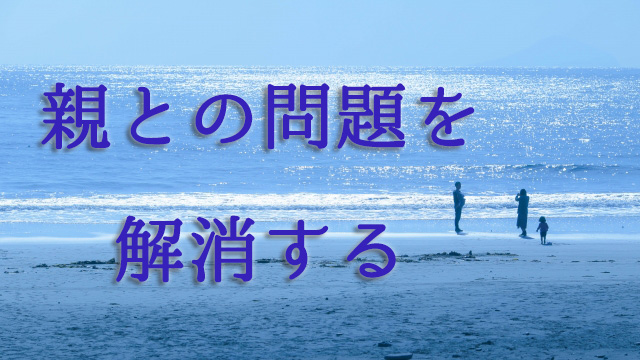

実は私たちは親との間に「未解決の問題」を多く抱えていて、それが現在の自分の人生に影響を与えていることになかなか気づかない。
子どもとの関係、夫婦間、職場での人間関係さらには人生全般が何かしら行き詰まっているなら、目の前の問題を解決しようと躍起になるより一度自分の親との間に「未解決の問題」がないか探ってみたほうが良いかも知れない。
特に子どもが思春期という難しい時期を迎え、仕事などでも重責を担う40～50代の人にとって今後の人生を立て直す意味でもこれは大切な作業だと私は感じている。
そこで今回は我が子のことはひとまず脇に置き、記憶をたどって子ども時代の親との関係を振り返ることをお勧めしたい。
さて最初に浮かぶ光景は何だろうか。できるだけ幼いころに戻ってそこに現れる親とのやり取り、そのときの自分の感じた想いなどを記憶のスクリーンに映し出して欲しい。
人生最初の記憶というのはその人の人生そのものを象徴する場面といわれている。特に母親と自分の関係するシーンは重要だ。頭で分析的に思い出すのではなく、できるだけハートで感じてみること、自分の感情を想起して欲しい。それは喜びだろうか。それとも悲しみあるいは淋しさだろうか。怒りや言葉にできない複雑な感情だろうか。
そうして小学校時代くらいまでの、母親とのやり取りエピソードを思い浮かべてみる。そのときあなたの記憶に映る母の姿はどんなものだろう。幸せそうか。楽しそうか。イラだっているだろうか。母親もしくは父親の口グセはどんなものだったろう。あなたに絶えず浴びせていた言葉はどんなものだったか。それを聞いたあなたは何を感じていたか。
ひと通り自分の感情を思い出したら、次にその状況にいたときの親の立場に立ってみる。
たとえば親に叱られている場面がよみがえったなら、そのとき親はどんな気持ちで叱っていたのかを感じてみる。親の口グセの中にどんな気持ちが込められていたかを感じてみる。不安なのか焦りなのかあるいは期待だったのか。それをただ感じてみる。
そうすることで子どものときはただ理不尽にしか思えなかった場面も違って見えてくるのでないだろうか。
愛を求めて重荷を背負う
こうして親とのやり取りを思い出すと様々な想念が浮かび上がってくる。楽しい思い出や嬉しかったこと、感謝の気持ちあるいは「して欲しかったのにしてもらえなかった」という悲しさや怒りの気持ち、理不尽な思いもあるだろう。
考えてみれば人間にとっていちばん厄介な問題は対人関係だ。「地獄とは他者のことだ」とサルトルは言ったがその通り。私たちが人生で一番悩み苦しむのはいつも人間関係であり、他者との関係ではないだろうか。そして誰にとっても最初の対人関係は親と自分の関係でそれはその後の対人関係の基盤となる。
だから親との関係に今だ解消されない問題があるとすれば、当然ながら現在の人間関係ひいては生活全般にそのひずみが生じることになる。
だが親との間にある「未解決な問題」とは何だろう。
それを知るには先のように親に対する感情をまず見ていくのが近道だと思う。特にネガティブな感情に気づくこと。ネガティブといっても親の扱いに怒りや憎しみを感じているということだけでなく、当時の親が不幸なので同情や悲しさを覚えていたのならそれもネガティブな感情に違いない。
私たちはごく幼い頃、親の庇護なしに生きていくことはできなかった。それゆえ幼子にとって親の愛情を一身に受けることは死活問題であり、その愛を獲得するために親の期待に応えようとする。
だが親の愛を十分得られなかったと感じた場合、多くは次の２通りのタイプに分かれる。
１つは自分を責めるタイプ。もう1つは親を責めるというパターン。
自分を責めるのは、自分が愛されないのは親の期待に応えられないから自分が悪いのだと思っている。あるいは生活苦などで親が不幸なのを見て、それを救えない自分を責めたり無力感を抱えてしまう場合だ。
こういう人は後になっても、何か問題が起こると「悪いのは自分だ」という思いに囚われ建設的な方向に足を踏み出せない。努力家だったり人に尽くすことも多いのに報われないのは、その自己肯定感の低さ故なのだが本人はなかなか気づけない。
「自分なんかが愛を得るには自己犠牲するしかない」という、その重さがまさに愛を遠ざけているという事実に気づけないのだ。
だから親との関係を見直し、自分が親の重荷を背負ってしまったのではないか。そして「重荷を背負うこと」が愛を得る手段と思い込んでしまったのではないかと気づいてそれを手放すことが大事となる。親の苦悩はあなたの苦悩ではなかったということだ。
反発することで親に支配されている
２つめの親を責めるパターンも１つめと同じ。そのパターンに気づくことで解放される。
よくあるのだが、大酒飲みの父親をもった息子が酒を一滴も飲ま（め）ない人になったり、破天荒な母に散々振り回された娘が必要以上に固い職業を選ぶなど親に対する反発が行動基準となる場合。
これも注意しなければならないのは、親のマイナス部分に反発する余り親と真逆の方向ばかり進むことでかえって自分の可能性を狭めてしまうことがあるということだ。
たとえば父親が大酒飲みだった息子は、酒を飲まないことで「酒の上での失敗」は免れても、酒を酌み交わすことで得られる他者との親密な交流を取り逃すかも知れない。
固い仕事―たとえば大きな会社の経理事務―に就いた娘は、それが本当は心底からやりかたった仕事ではなかったと後で気づくかも知れない。その職業は親への反発から選んだだけで当然やりがいも充実感も得られないということになる。
同じように親のだらしない行状―たとえば母親が異性関係で奔放だったなど―に反発してこれまた必要以上に異性関係に潔癖を求めることもある。こういう人は異性に限らず全般的に深く親密な人間関係を築くことが苦手となる傾向がある。
こういう人たちは、親を責める気持ち親への反発が出発点となり―行動の原動力となり―かえって自分の望む現実から外れてしまっていることに気づかなければならない。
親を責めるなとか親を許せと言ってるのではない。親への反発にせよ親への同情にせよ、それらを隠れた動機としている以上いつまでも親の影響力に支配されたままだということだ。
もし人生の諸々特に人間関係がうまくいっていないなら、それは早く自分の本当の人生―親に支配された人生ではなく―を生きろというサインだと受け取ろう。
感謝して親から卒業する
中年の危機という言葉がある。色々な意味に使われるが、私は中年という人生の折り返し地点はそれまでの親の影響から脱して自分なりの人生を創り上げる努力の時期と捉える。
努力と言ったのはそこにいくつかの困難があるからだ。誰もが出発点において親の信念、価値観を取り込んで生きてきた。そうしなければ生きられないからだ。家族を一艘の船に例えるなら親は船頭であり水先案内人である。子はその船の中で親の指す行き先に従うしかない。そのほうが安全だからだ。
しかしいつかはその船を下りなければならない。下りて今度は自分の船（家族）を操縦しなければならない。それでも始めは親から教えられたようにしか操縦できない。自分1人の意思で操縦するのは恐い思いもある。
これが人生前半部までの生き方だが、自分なりの方向を見定めなければ行き着く先は見えて来ない。自分も家族も大海の中であてもなくさ迷いかねない。船長として明確な針路（自分なりの人生）を決めて進むのか、それともさ迷い続ける航海になるのかその分岐点こそが中年の危機ということになる。
つまり親の影響を脱するという困難を乗り超えるかどうか。これには2つのポイントがあると思う。
１つは、自分の人生は多かれ少なかれ親の影響を受けているのだということをきちんと認めること。そのおかげで今まで無事に生きてこられた面はたくさんあったのだから、まずは親に感謝することだ。
２つめは、親の人生と自分の人生は別であって学ぶべき課題も別であるとハッキリ割り切る姿勢をもつことにある。そうすれば先の例であげたように親の重荷（課題）を背負う必要はないし親を責めることで間違った方向に走る必要もないことが分かる。
さて、その上で冒頭に言ったような親の記憶をもう一度浮かべてもらいたい。
心の中であなたの父もしくは母、あるいは両方を目の前に浮かべてこう語りかけて欲しい。
「お父さんお母さん。私はあなた方の人生を尊重します。育ててくれて本当にありがとうございました。私はこれから自分の人生を自由に生きていいですか。あなたたちより幸せな人生を歩んでもいいですか」
このように許可を求めた上で再び感謝する。
これは親からの卒業宣言であると同時にこれからのあなたの人生創造の開始宣言である。
このときあなたは気づくかも知れない。
親も親なりの仕方であなたを愛していたということに。